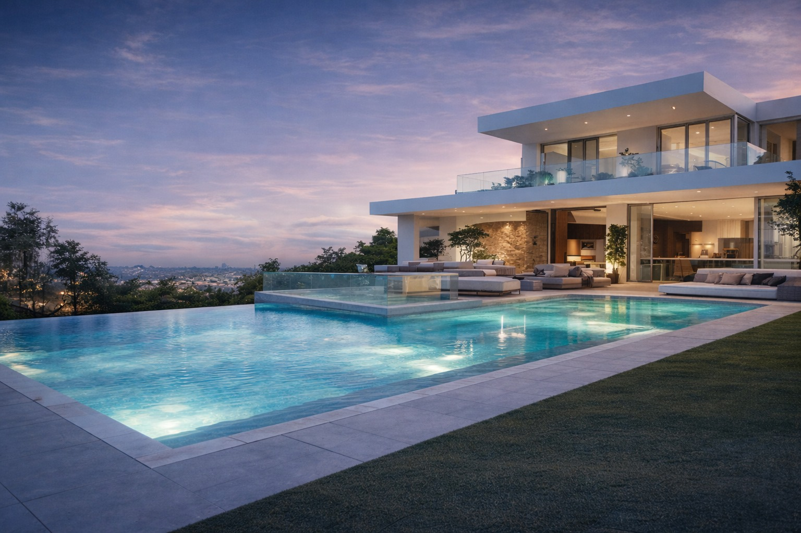

<section
  id="inicio"
  [attr.aria-label]="'HOME.HERO_SLIDER.ARIA.BANNER' | translate"
  class="relative w-full max-w-full overflow-x-hidden"
>
  <div class="relative w-full max-w-full">
    <div
      #track
      class="relative flex w-full max-w-full snap-x snap-mandatory overflow-x-auto scroll-smooth overscroll-x-contain [-ms-overflow-style:none] [scrollbar-width:none] [&::-webkit-scrollbar]:hidden"
      (scroll)="onTrackScroll()"
    >
      <article
        class="relative w-full min-w-full flex-none snap-start"
        aria-roledescription="slide"
      >
        <div
          class="relative h-[52vh] w-full sm:h-[60vh] md:h-[68vh] lg:h-[72vh]"
        >
          

          <div
            class="absolute inset-0 bg-gradient-to-t from-black/70 via-black/30 to-black/10"
          ></div>

          <div
            class="absolute inset-[15%] bottom-0 px-4 pb-12 pt-16 sm:pb-14 md:pb-16"
            [ngClass]="{ 'inset-48': !isMobile }"
          >
            <div class="mx-auto w-full max-w-5xl text-center">
              <h2 class="text-2xl font-semibold text-white md:text-4xl">
                {{ "HOME.TITLE_HOME" | translate }}
              </h2>
              <p class="mt-2 text-sm text-white/90 md:text-base">
                {{ "HOME.SUBTITLE_HOME" | translate }}
              </p>
            </div>
          </div>
          <div  class="absolute inset-[30%] bottom-0 px-4 pb-12 pt-16 sm:pb-14 md:pb-16">
            <div class="flex">
            <ion-button
              type="button"
              class=" w-[300px] mx-auto text-white [--border-radius:0.75rem] [--background:var(--color-primary)] [--background-hover:var(--color-secondary)] [--background-activated:var(--color-secondary)]"
              [ngClass]="{ 'w-[50%]': isMobile }"
              expand="block"
            >
              <span class="inline-flex items-center justify-center gap-2">
                 <ion-icon name="search-outline" class="h-6 w-6"></ion-icon>
                {{ "HOME.SEARCH_PROPERTIES" | translate }}
              </span>
            </ion-button>
             <ion-button
              type="button"
              class="w-[300px] mx-auto text-primary [--border-radius:0.75rem] [--background:var(--color-surface)] [--background-hover:var(--color-secondary)] [--background-activated:var(--color-secondary)]"
              [ngClass]="{ 'w-[50%]': isMobile }"
              expand="block"
            >
              <span class="inline-flex items-center justify-center gap-2">
                <ion-icon name="call-outline" class="h-6 w-6"></ion-icon>
                {{ "HOME.TALK_TO_SPECIALIST" | translate }}
              </span>
            </ion-button>
            </div>
          </div>
        </div>
      </article>
    </div>
  </div>
</section>
